Verification scenarios
4.1 Admin: PayU settings panels and event payment-method label — ✅ Passed
FR11 · screen:admin-payu-settings
| # | Action | Expected | Actual | Status |
|---|---|---|---|---|
| 1 | Open system settings | PayU panel, 6 PAYU_* settings | Panel with fa-credit-card; enabled, live mode, POS ID, client_id, client_secret, second key | ✅ |
| 2 | Open organization settings | Same panel, org scope | Panel shown, #PAYMENT header present | ✅ |
| 3 | New event form | Checkbox "PayU: BLIK, fast transfer, card" | Present, selectable | ✅ |
| 4 | Event detail | Label in payment methods | "Offline payment …, PayU: BLIK, fast transfer, card" | ✅ |
Issues: §5.4 C2 (plain-text secrets, spec I6)


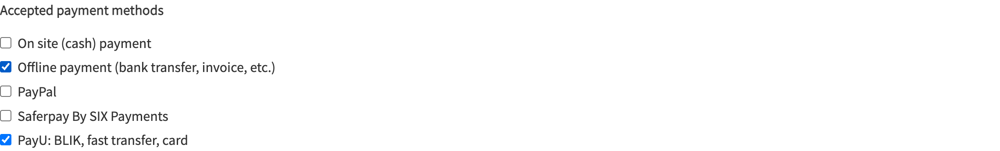
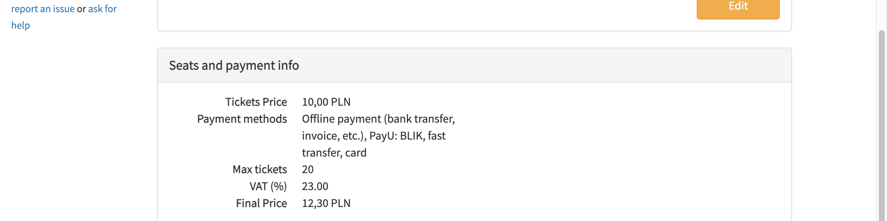
4.2 Public: PayU option, proxy panel and stepper — ⚠️ Passed with issues
FR10, FR13 · screen:payment-method-selector, component:stepper-active-badge
| # | Action | Expected | Actual | Status |
|---|---|---|---|---|
| 1 | Reserve 1 ticket, fill contact, continue | Overview | Overview loaded | ✅ |
| 2 | Inspect radios | #PAYU / #PAYU-label, credit-card icon | BANK_TRANSFER + PAYU; label and icon match | ✅ |
| 3 | Click #PAYU-label | h4.text-body-secondary "PayU" + description | Matches exactly | ✅ |
| 4 | Pay button | "Pay <price>" | "Pay zł 12.30" | ✅ |
| 5 | Stepper current badge | var(--bs-primary) #0d6efd | rgb(0,122,204) = #007ACC | ⚠️ |
Issues: §5.3 M1 (stepper fix on fix/stepper-active-color); §5.4 C3 (horizontal radios)


4.3 Pay on the PayU sandbox and land on the confirmation — ✅ Passed
FR1, FR4, FR6 · success criterion: PLN purchase via return + force-check
| # | Action | Expected | Actual | Status |
|---|---|---|---|---|
| 1 | Click Pay | Redirect to PayU | merch-prod.snd.payu.com/pay/?orderId=S2PC21TH… | ✅ |
| 2 | wire → mTransfer | Simulator | /simulator/ | ✅ |
| 3 | #formSubmit → /auth #formSubmit | Back to alf.io | /processing-payment | ✅ |
| 4 | Force check | Success | Button shown, clicked; /success after about 18 s | ✅ |
| 5 | Success page | Reservation complete | "Hooray! …", Ticket #1 Regular | ✅ |
Issues: None observed (notifications cannot reach localhost, as expected)

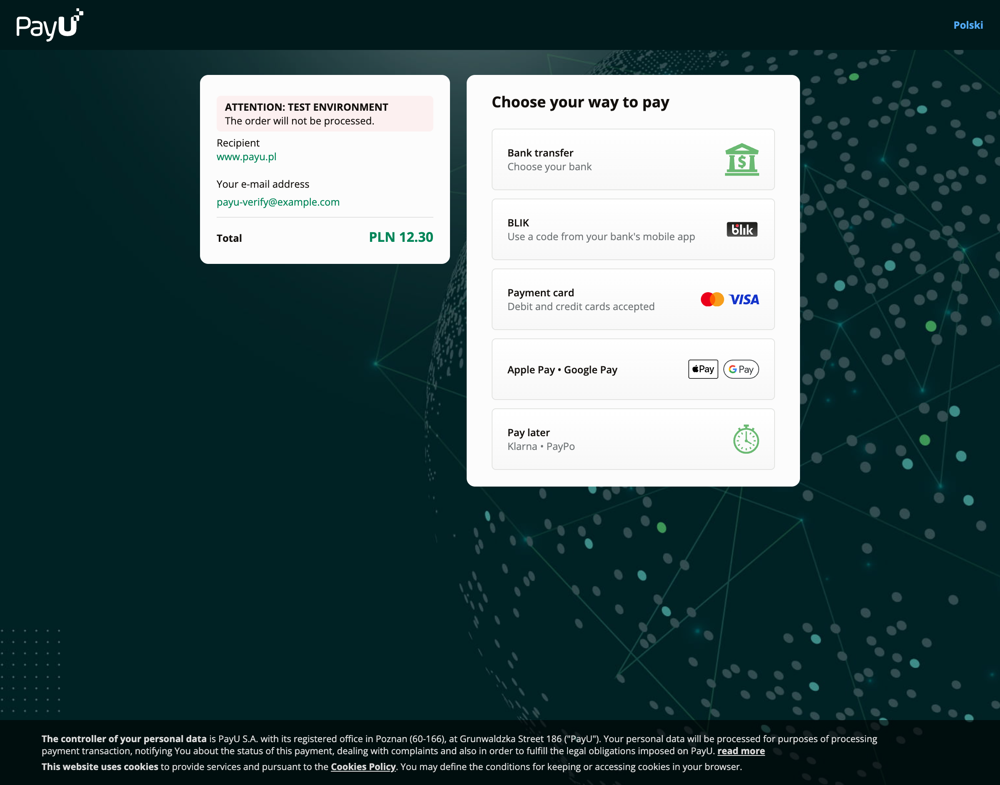

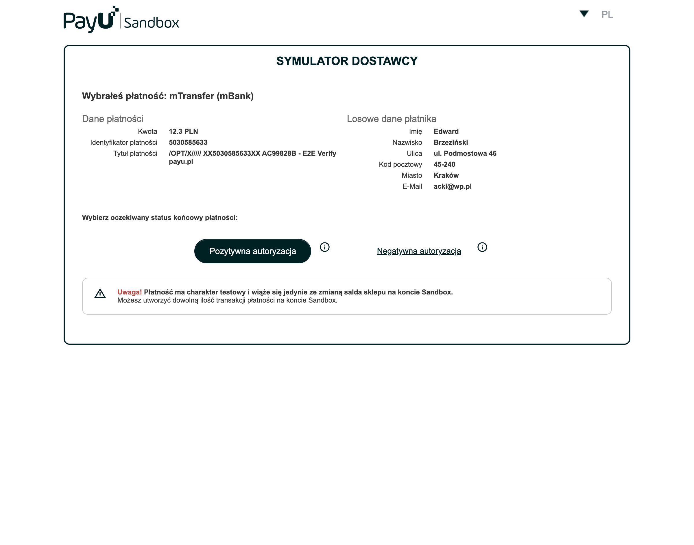


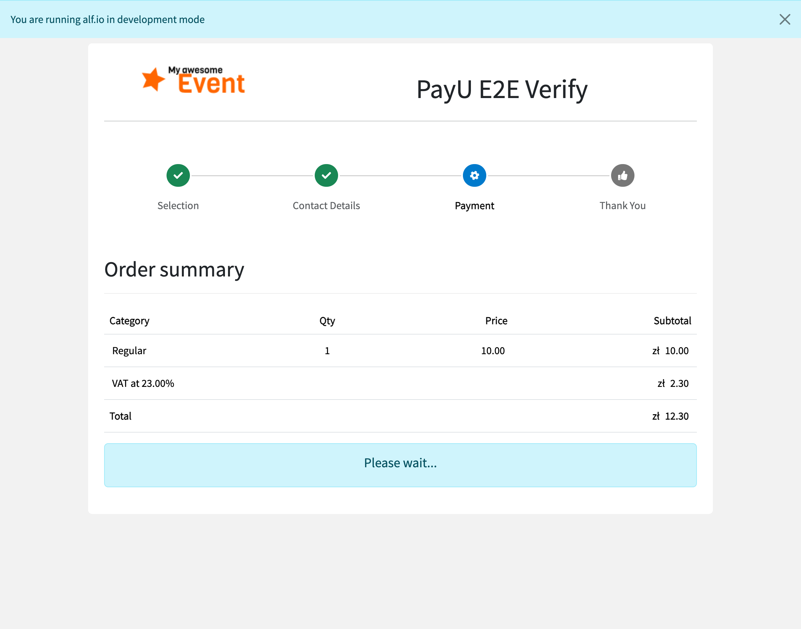

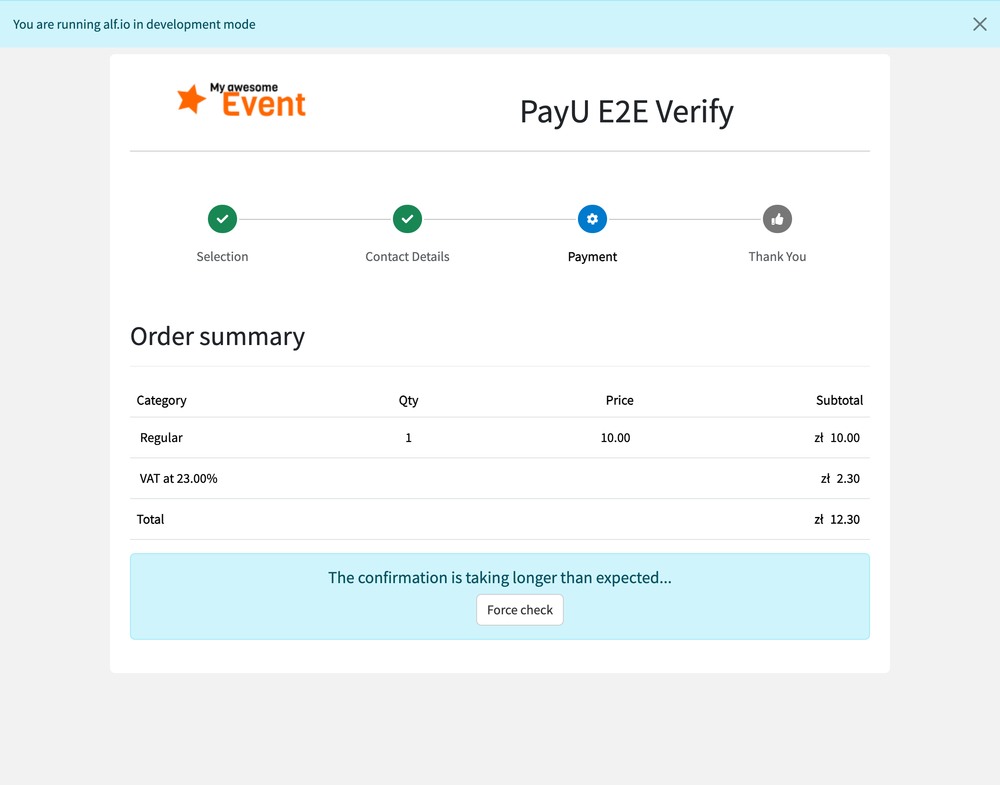

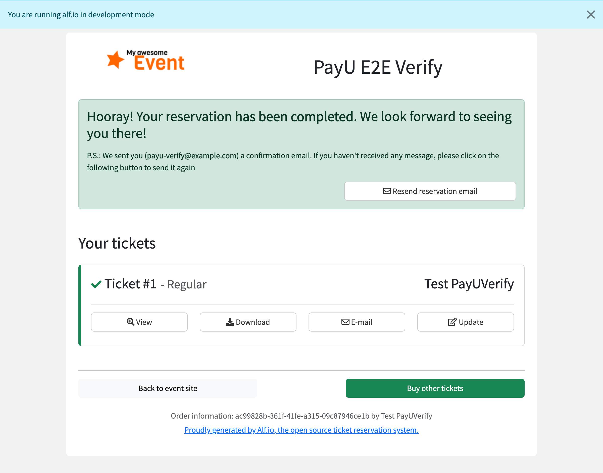
4.4 Abandon on PayU, come back, pick again — ✅ Passed
FR6 error path · spec §7 toast rule
| # | Action | Expected | Actual | Status |
|---|---|---|---|---|
| 1 | Pay → mTransfer → #formReturn → /auth | Overview + cancel notice | Toast "The payment was not completed…" | ✅ |
| 2 | Check URL | paymentCancelled removed | /overview, no query | ✅ |
| 3 | Reload | No toast | No toast | ✅ |
| 4 | Select Bank Transfer, then PayU | Both selectable | Both checked in turn; PayU panel | ✅ |
| 5 | Pay with PayU again, cancel | New order, same notice | New orderId PL7VWSWR…; toast again | ✅ |
| 6 | ?paymentCancelled=error.foo | No toast | No toast | ✅ |
Issues: None observed

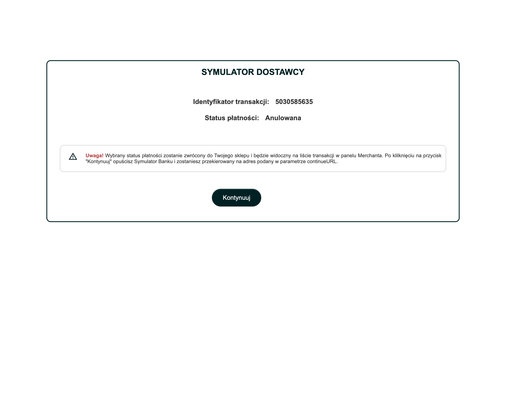


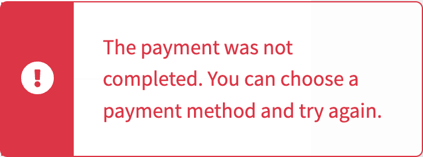

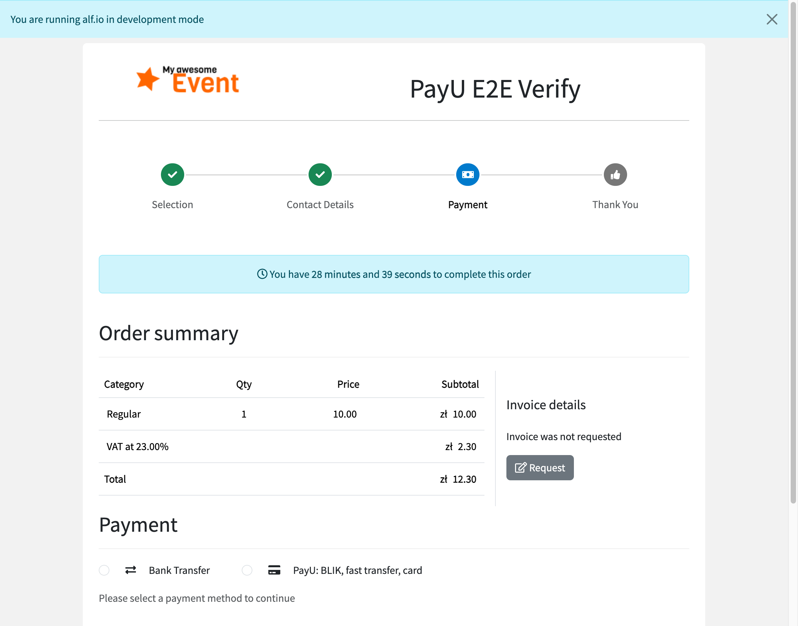

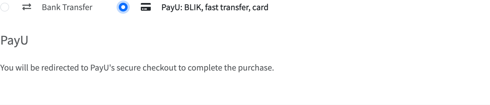
4.5 Polish UI label — ⚠️ Passed with issues
FR12 (PL keys on fix/pl-translations)
| # | Action | Expected | Actual | Status |
|---|---|---|---|---|
| 1 | Look for language switch | Switch if PL offered | None (event EN only) | ⚠️ |
| 2 | Overview ?lang=pl | PL or EN fallback | Stays EN | ⚠️ |
| 3 | GET i18n bundle pl | PayU keys fall back to EN | PayU label + cancel message EN; others PL | ✅ |
Issues: §5.3 M2 (expected EN fallback)

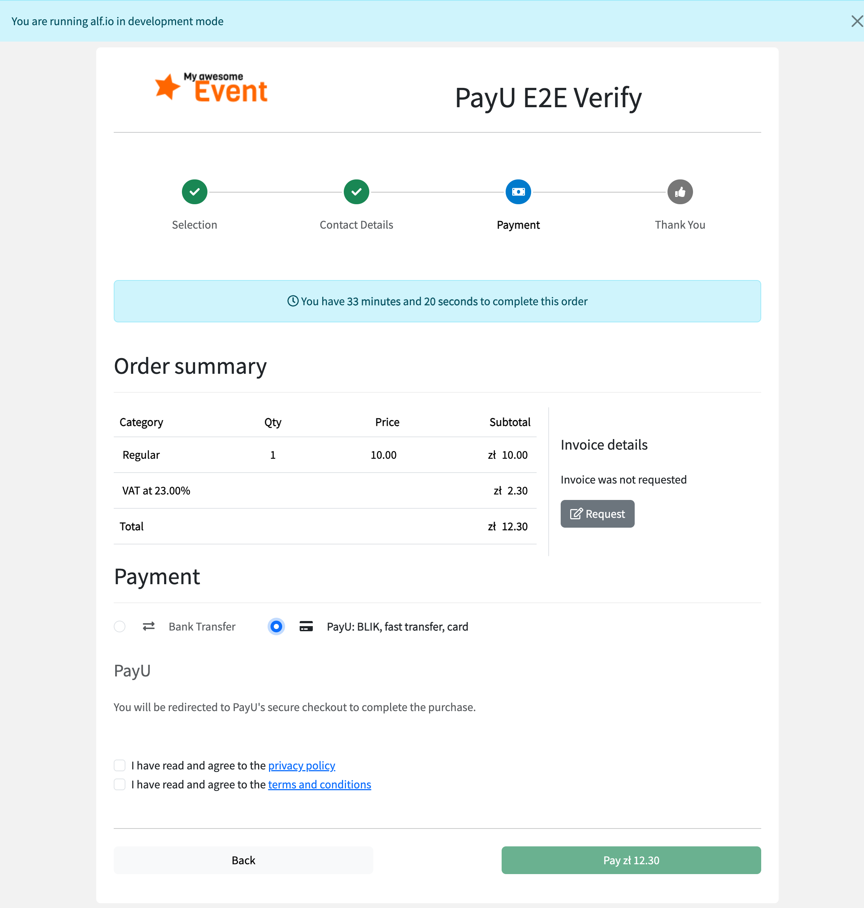
4.6 New admin: PayU payment icon — ✅ Passed
FR11 · component:admin-payment-icon
| # | Action | Expected | Actual | Status |
|---|---|---|---|---|
| 1 | Reservations list | credit-card icon + method | AC99828B: icon + "PAYU", PLN 12.30 | ✅ |
| 2 | Transactions list | Same component | method PAYU, icon credit-card | ✅ |
Issues: §5.4 C1 (raw PAYU text, spec-accepted)
Discrepancies (by severity)
Critical: None observed. · Major: None observed.
| Severity | Finding | Notes | Evidence |
|---|---|---|---|
| Minor | M1. Stepper active badge still #007ACC on feature/payu | Fix lives on fix/stepper-active-color (source there has var(--bs-primary)). Merge, then check again. | 08-stepper-active-badge.png |
| Minor | M2. PL bundle falls back to EN for PayU keys | Expected: PL keys on fix/pl-translations. Merge, then check with a PL-enabled event. | 19-overview-lang-pl.png |
| Cosmetic | C1. New admin shows raw "PAYU" | Accepted in the spec, consistent with SAFERPAY. | 20-new-admin-reservations-payu-icon.png |
| Cosmetic | C2. PayU secrets render as plain text | Accepted in the spec (I6); existing <setting> behaviour for all providers. | 01-admin-system-payu-panel.png |
| Cosmetic | C3. Horizontal radio row instead of the mockup's vertical list | Existing selector layout for few methods; no template change intended. | 07-overview-payu-selected.png |


Console & network errors
| Source | Message | Severity | Impact |
|---|---|---|---|
| test.assets.payu.com …/config.json | 404 | Cosmetic | Third-party sandbox |
| dev-charitysimulator…/siepomaga.png | ERR_NAME_NOT_RESOLVED | Cosmetic | Third-party sandbox |
| favicon.ico (alf.io, bank simulator) | 404 | Cosmetic | None |
| /admin/api/organization/NaN/promo-code | 500 | Minor | Pre-existing, unrelated to PayU |
| Vite / Lit (localhost:5173) | dev-mode warnings | Cosmetic | Dev only |
No PayU-related console errors on alf.io pages.
Exit criteria
| Criterion | Status | Evidence |
|---|---|---|
| Sandbox e2e completes a PLN purchase via return + force-check | ✅ | 14-reservation-success.png |
| PayU option shows the correct label, icon and description | ✅ | 07-overview-payu-selected.png |
| Admin panels render in system and organization settings | ✅ | 01, 22 |
| New admin shows the card icon for PAYU | ✅ | 20-new-admin-reservations-payu-icon.png |
| One remote order per payment attempt (browser-observable part) | ✅ | New orderId after a cancel (§4.4) |
| Cancel returns to the overview with a clear message | ✅ | 16, 17 |
| FR13 active badge uses var(--bs-primary) | ❌ | 08 (fix/stepper-active-color, expected) |
Recommendations
- Must fix before merge: none.
- Should fix soon: M1, M2: merge the stepper and PL branches, then check at runtime.
- Nice-to-have: C1 display-name map, C2 masking secret settings; the pre-existing promo-code 500, separately from this task.
Conclusion: GO WITH CAVEATS. Merge feature/payu, then check the badge colour and the PL label once their branches land.